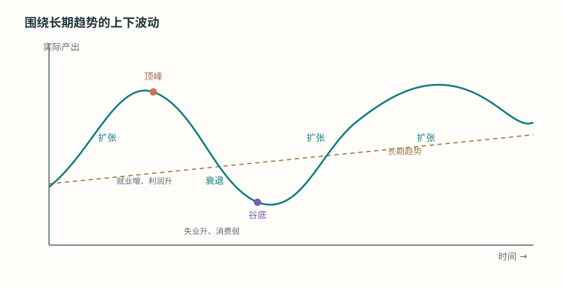
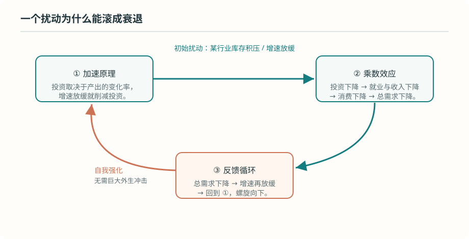

经济周期理论
上一章讨论几十年的长期增长，这一章把镜头拉回短期：为什么产出会围绕趋势上下波动？从凯恩斯的“动物精神”到真实经济周期的技术冲击，再到新凯恩斯的黏性与明斯基的信贷周期，看四种解释各自抓住了波动的哪个侧面。
经济周期不是“四季更替”
经济周期描述的是实际产出围绕长期增长趋势的上下波动，而不是“衰退”的同义词。一个完整周期通常划分为四个阶段：
| 阶段 | 英文 | 典型特征 |
|---|---|---|
| 扩张 | Expansion | 产出与就业上升、投资活跃、利润上升 |
| 顶峰 | Peak | 产能接近上限、劳动力市场紧张、通胀压力上升 |
| 衰退 | Recession | 产出下降、失业上升、消费与投资收缩 |
| 谷底 | Trough | 失业触顶、过剩产能出清，为下一轮扩张蓄力 |
在美国，衰退的起止日期由美国国家经济研究局（NBER）商业周期测定委员会事后判定：它综合考虑就业、工业产出、实际个人收入、零售额等一系列指标。注意“事后”二字——官方宣布衰退开始时，衰退往往已经持续了几个月。

下面四节依次介绍四种解释框架。它们不是“四个都可以选一个”的并列选项，而是四副不同的眼镜——各自强调不同机制，现实往往是多重力量的交织。
凯恩斯：动物精神与乘数-加速数
凯恩斯（1936）把波动部分归因于动物精神——投资者的乐观与悲观会自我放大。他用“选美比赛”作比：你要选的不是自己认为最美的面孔，而是别人认为最美的面孔。股市同样如此：投资者揣摩的不是企业的真实价值，而是别人会怎么想。这种二阶揣摩会放大市场波动。
后来的凯恩斯主义者把这个直觉模型化为乘数-加速数模型（Samuelson）。它靠两个机制产生自我强化的波动：
- 加速原理：投资不只取决于产出水平，还取决于产出的变化率。增速上升时企业加快建厂，增速一旦放缓（即使仍在增长），投资也会大幅下降。
- 乘数效应：投资下降 → 就业减少 → 收入减少 → 消费减少 → 产出进一步下降。向下螺旋；反过来向上也一样。

用萨缪尔森的差分方程表示，设 Ct=c·Yt−1、It=v·(Yt−1−Yt−2)，则总产出满足：
演算：一次支出冲击会激起多大振荡？
给政府支出加一次短暂冲击，看乘数-加速数回路把产出带向何处。改变 c 与加速数 v，观察振荡是衰减还是发散。所有数值为构造演算，不对应任何真实经济的校准。
真实经济周期：技术冲击
与“人心”相对的另一极，是 Kydland 与 Prescott（1982）开启的真实经济周期理论（RBC）。它的核心主张是：波动的主要驱动力是真实的技术冲击，而非货币或需求因素。这里的“技术”是广义的：干旱、油价暴涨、新管理制度、甚至一次重大政策变化，都可视为技术冲击。
RBC 模型的一个惊人之处是：它假设所有主体理性、市场完全竞争、价格与工资完全灵活，没有价格黏性、没有动物精神，唯一的扰动来自技术冲击。然后他们用校准模型去拟合美国战后数据，发现模型能解释相当一部分产出波动。如果该结论成立，就得出一个颠覆性推论：衰退不是“市场失灵”，而是经济对技术冲击的最优反应——负向冲击降低了劳动边际回报，理性工人会主动减少工作、增加休闲。既然如此，政府似无必要去“刺激经济”。
| 特征 | RBC 的解释 |
|---|---|
| 产出与就业同向变动、高度相关 | 技术冲击同向影响产出与劳动边际回报 |
| 消费与产出正相关，但消费波动小于产出 | 理性家庭平滑消费，暂时冲击只影响消费一小部分 |
| 投资波动远大于产出波动 | 技术冲击改变资本边际产出，引发投资大幅调整 |
| 劳动生产率顺周期 | 繁荣时技术好、生产率高；衰退时相反 |
| 货币中性 | 货币被动适应产出，不是波动原因 |
新凯恩斯：价格黏性与协调失败
新凯恩斯主义接受 RBC 的“从微观基础出发建模”这一方法论前提，但引入一个 RBC 忽略的现实：价格和工资不是完全灵活的。理发店可能一年才涨一次价，超市标价很少变动。多项基于美国消费者价格微观数据的研究估计，平均价格持续时间大致在几个季度量级（如 Nakamura & Steinsson 2008），而不是每时每刻都在调整。
为什么企业不天天改价？一个常用解释是菜单成本：改价需要重印菜单、更换价签、通知系统，都是成本。单个企业的菜单成本可能很小，但当所有企业都有菜单成本时，整体价格体系就变黏了，从而产生巨大的宏观效应。注意“菜单成本”是对黏性的模型化解释，不是唯一的经验原因（合约、信息滞后等也在起作用）。
更重要的是“黏性 + 预期”会带来协调失败与多重均衡。考虑两种自我实现的预言：
- 好均衡：企业预期需求旺 → 扩张生产 → 多雇人 → 收入上升 → 消费旺 → 预期得到验证。
- 坏均衡：企业预期需求疲软 → 削减生产 → 裁员 → 收入下降 → 消费弱 → 预期同样得到验证。
与老凯恩斯主义相比，新凯恩斯的关键差别是：不再把“价格刚性”当作假设给定，而是去解释它为何存在（菜单成本、协调失败、交错定价等），并把微观行为纳入一般均衡模型——这也为下一章要讲的 DSGE 模型铺了路。
信贷周期与明斯基时刻
无论是“动物精神”还是“技术冲击”，都忽略了波动中一个关键角色：信贷。明斯基（Hyman Minsky）的核心命题是：稳定本身孕育不稳定。他把借款人分为三类：
- 对冲型融资：现金流足以偿还本金与利息，最稳健。
- 投机型融资：现金流只能付息，本金需借新还旧。
- 庞氏融资：现金流连利息都付不起，只能靠资产价格持续上涨。
繁荣期一切看起来很好：银行放宽贷款标准，借款人从对冲型逐级滑向投机型甚至庞氏型，资产涨价又鼓励更多加杠杆——正反馈。当某个微小事件（某机构收紧贷款、央行加息、资产停涨）使庞氏借款人无法借新还旧，他们就被迫抛售资产，价格下跌引发更多抛售。这就是明斯基时刻：资产价格从涨转跌、信贷市场突然冻结的转折点。

把四种框架放在一起：凯恩斯强调需求与预期，RBC 强调技术供给冲击，新凯恩斯强调黏性与协调失败，明斯基强调信贷与金融脆弱性。它们针对的机制不同，现实往往是多重力量的叠加；分析时应先问“当前哪类机制占主导”，而不是预设单一原因。
来源与阅读
本章的模型与特征事实均给出出处；演算数字为构造示例，不对应任何真实经济的校准。
- Kydland, F. & Prescott, E. (1982). Time to Build and Aggregate Fluctuations. Journal of Monetary Economics
- Nobel Prize 2004 · Kydland & Prescott（真实经济周期与时间一致性）
- Nakamura, E. & Steinsson, J. (2008). Five Facts about Prices. QJE（价格持续时间估计）
- Diamond, P. (1982). Aggregate Demand Management in Search Equilibrium. JPE（多重均衡与协调）
- NBER · Business Cycle Dating Committee（衰退起止的事后判定）
- Minsky, H. (1986). Stabilizing an Unstable Economy（金融不稳定假说综述）